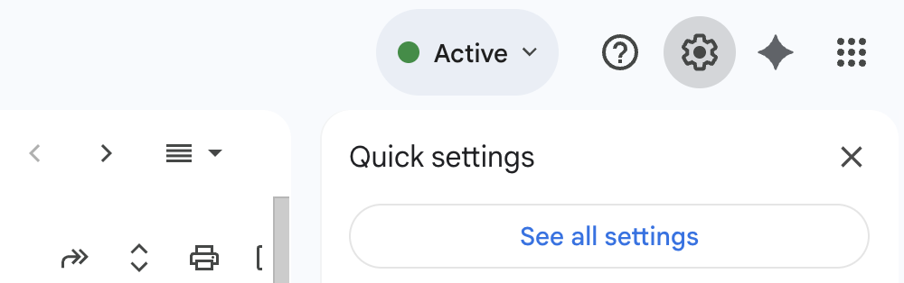
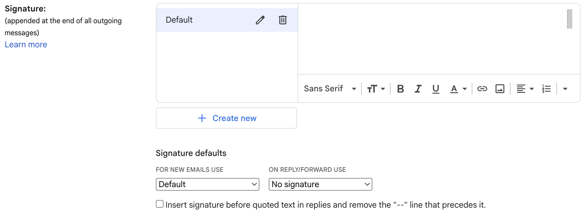
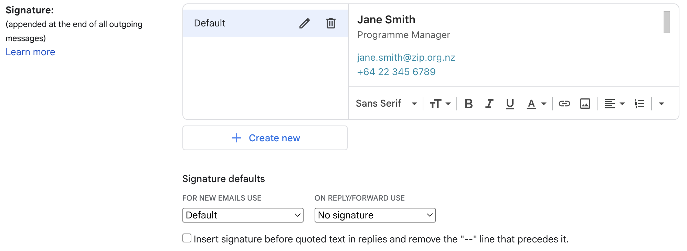

📱 On mobile? This tool works best on desktop. Set up your signature on desktop Gmail and it will automatically appear on your mobile device (including images and formatting).
You should do this in desktop Gmail (via web browser). Once you've set it up, it'll automatically appear on all your devices, including the Gmail mobile app.
Generate your signature using this tool, and click "Copy signature" to copy it to your clipboard
On a desktop computer, open Gmail in a web browser and go to Settings (⚙️ gear icon) → See all settings
Scroll down to your signature settings. Either select an existing signature and delete the contents, or create a new one
Paste in your new signature
Scroll down and save all settings
That's it! Your signature will now appear on all devices. On the Gmail mobile app, make sure the "Mobile Signature" field is empty (or deleted) so it uses your desktop signature automatically.